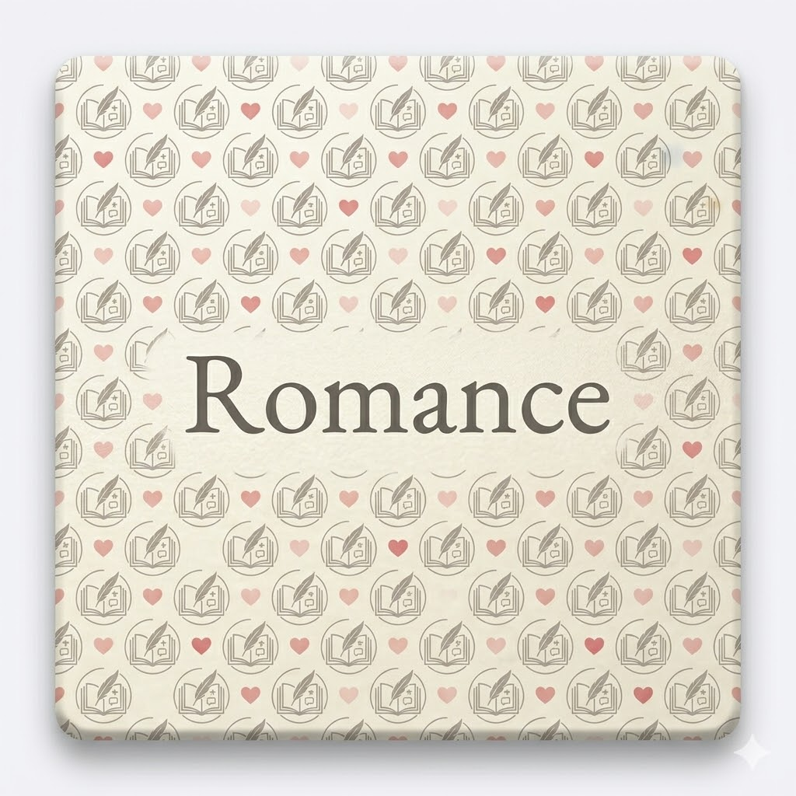
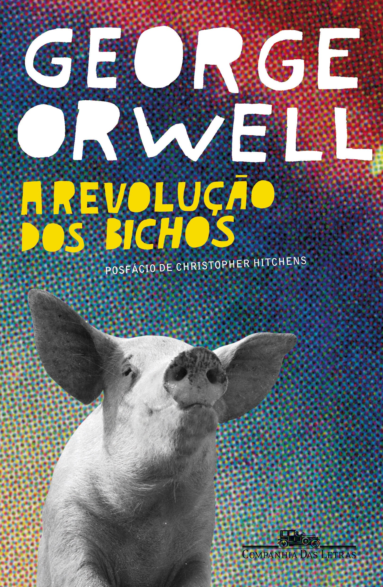
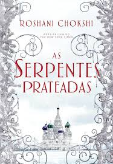
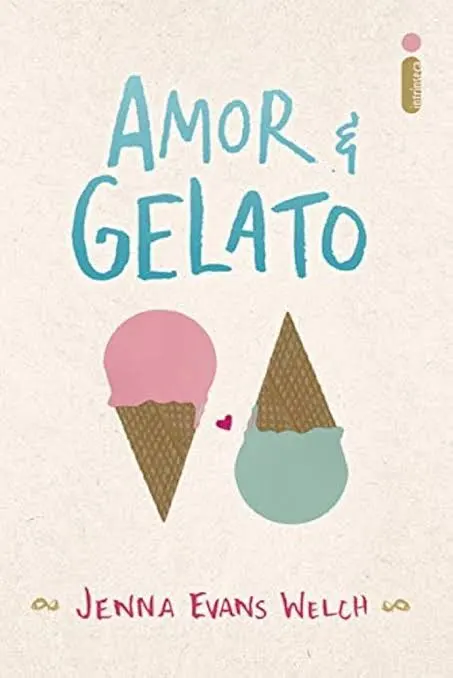
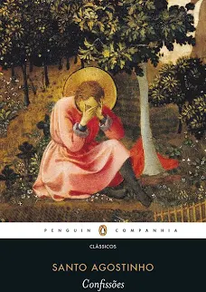

Resumo do livro:
A Revolucao dos Bichos narra a historia de animais que expulsam humanos para criar uma
sociedade igualitaria mas acabam dominados por porcos tiranos que distorcem as regras em beneficio proprio e um alerta
curto sobre como o poder corrompe e a manipulacao acontece sendo uma leitura obrigatoria para entender o mundo real

Resumo do livro:
As Serpentes Prateadas e uma continuacao absolutamente brilhante que mergulha em uma busca
sombria e eletrizante pela imortalidade nas paisagens geladas da Russia. A escrita de Roshani Chokshi e poetica e viciante
elevando o nivel da historia original enquanto acompanhamos Severin e sua equipe em um jogo perigoso de traicoes segredos e
artefatos antigos. E um livro excepcional que equilibra perfeitamente um ritmo de tirar o folego com um desenvolvimento
emocional profundo e doloroso dos personagens tornando a leitura uma experiencia impossivel de largar e um verdadeiro deleite
para quem ama fantasias ricas e bem construidas.

Resumo do livro:
Amor e Gelato e uma jornada encantadora e emocionante pelas paisagens deslumbrantes da Italia
que captura o coracao desde a primeira pagina acompanhamos Lina em uma busca por respostas sobre o passado de sua mae em Florenca
guiada por um diario antigo e pelo adoravel Ren o livro e simplesmente irresistivel pois mistura de forma perfeita um romance leve
e doce com uma descoberta familiar profunda e tocante capaz de fazer qualquer leitor se apaixonar e a leitura ideal para quem busca
uma historia reconfortante cheia de sorvetes maravilhosos e aquela sensacao gostosa de um verao europeu inesquecivel sendo impossivel
nao se encantar com cada capitulo dessa obra apaixonante

Resumo do livro:
Confissões de Santo Agostinho é uma obra-prima absoluta e atemporal que consegue ser, ao mesmo
tempo, um tratado filosófico denso e um diário íntimo escandalosamente honesto. A genialidade do livro reside na coragem de Agostinho
em expor suas crises existenciais, erros de juventude e a busca incessante por um sentido maior, criando uma ponte direta com qualquer
leitor moderno que já se sentiu perdido. É uma leitura poderosa e transformadora, onde a escrita elegante se funde com uma profundidade
psicológica que poucas obras alcançaram na história da humanidade, tornando-se um convite irresistível para quem deseja explorar as
complexidades da alma e descobrir que os maiores dilemas do coração humano são, no fundo, eternos.